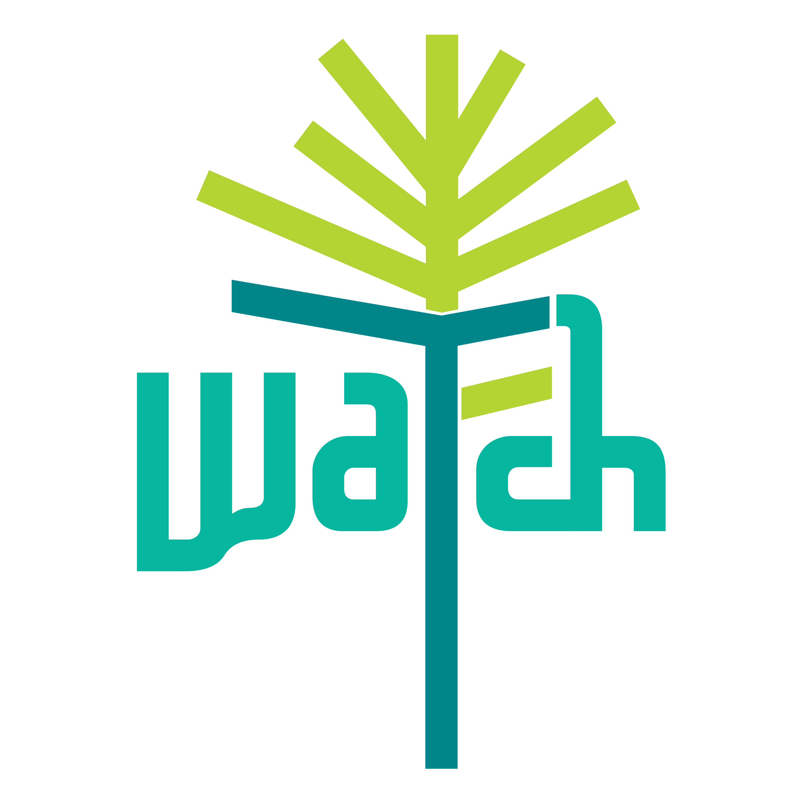

같은 책을 되풀이하는 회독이 아닙니다. 서로 다른 세 가지 글로 같은 주제를 읽고 판단까지 거치며, 문학과 비문학 지문을 푸는 힘이 함께 자랍니다.
자주국어의 '자주'에는 세 겹의 뜻이 있습니다. 스스로(自主), 날마다(자주), 귀하게(紫朱). 이 셋이 모이면 공부는 억지로 하는 일이 아니라 손에 익은 기예, ART가 됩니다.
왜 읽는지 아는 아이는 시키지 않아도 책을 폅니다. 받아 적는 공부보다 스스로 묻고 찾아가는 공부. 아이 안의 '왜'를 먼저 깨웁니다.
하루 한 쪽이 모여 일 년이면 한 권이 됩니다. 거창한 계획보다 매일 15~20분의 읽기. 읽고 쓰는 일을 하루의 한 칸으로 만듭니다.
귀한 것은 아무렇게나 다루지 않습니다. 아이의 시간과 노력은 귀합니다. 헛되이 쓰지 않도록 제대로 읽고 쓰는 방법을 익힙니다.
동기가 시작하게 하고, 끈기가 이어 가게 하고, 슬기가 멀리 가게 합니다.
바람샘은 서울 중계동 학군 사립고에서 15년간 국어를 가르쳤고, 교육부 논술심의위원회(2005) 위원으로 대학 논술 문항이 고등학교 교육과정 안에 있는지 심의했습니다. 그 뒤 여러 초중고 대안학교에서 학교장과 교육연구소장을 지내며 교육과정을 설계해 왔고, 그 경험을 모아 '이야기로 문해력 기르기' 교육과정을 만들었습니다.
수업은 처음부터 끝까지 바람샘이 맡습니다. 아이가 쓴 글은 한 편도 빠짐없이 바람샘이 읽고, 질문으로 답합니다.
모든 글에 초록 펜 질문을 남기고, 결과를 과장 없이 알립니다.
이야기책을 끝까지 읽고 옵니다. 모르는 것은 모른다고 말합니다.
하루 15~20분 읽는 시간을 지켜 주시고, 결과보다 읽은 이야기를 물어봐 주세요.

바람나무숲 교육연구소
자주국어는 바람나무숲 교육연구소의 숨 · 몫 · 삶 · 꿈 철학 위에 세운 배움입니다. 바람나무숲 앱에서 보기